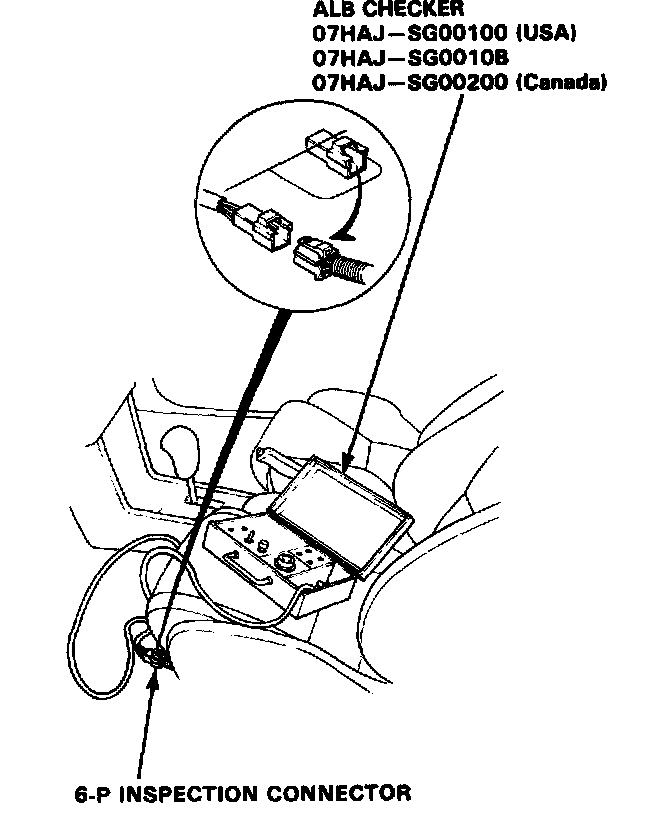
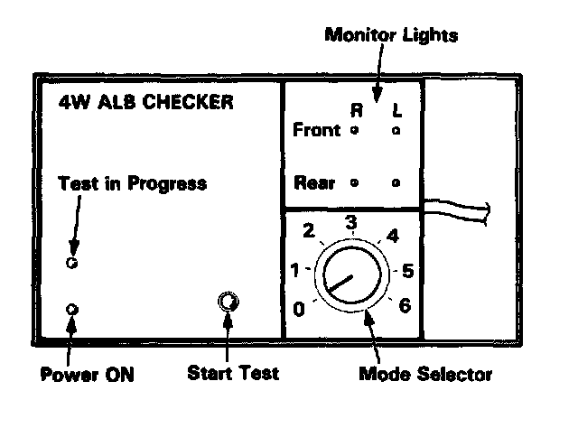

Wheel Sensor Signal Confirmation
Wheel Sensor Signal ConfirmationNOTE: Use the ALB checker (mode 0) to confirm proper wheel sensor operation.
1. Disconnect the 6-P inspection connector from the connector cover on the cross member under the driver seat and connect the 6-P inspection connector to the ALB checker.

2. Raise the car so that all four wheels are off the ground and support on safety stands.
3. Turn the ignition switch ON.
4. Turn the Mode Selector switch to "0."

5. With the transmission in neutral, rotate each wheel briskly (one revolution per second) by hand, and confirm that its respective monitor light on the checker blinks as the wheel rotates.
NOTE:
- Rotating a wheel too slowly will produce only a weak blink of its monitor light that may be difficult to see.
- In bright sunlight, the monitor light may be difficult to see. Perform tests in a shaded area.
- In some instances, it may not be possible to spin the front wheels fast enough to get a monitor indication. If necessary, start the engine and slowly accelerate and decelerate the front wheels.
The monitor lights should blink indicating a good wheel sensor signal.
If any monitor light fails to blink, check the suspected sensor, its air gap and its wiring/connectors.